Uso del sitio
Cronología Gamer es un sitio creado con fines informativos y de entretenimiento. Al acceder al sitio, aceptas utilizar el contenido de manera responsable y respetuosa.
Todo el contenido publicado está destinado a fans de los videojuegos, incluyendo historias, cronologías, personajes y análisis de distintas sagas.
Contenido y derechos
Las imágenes, nombres y marcas de videojuegos pertenecen a sus respectivos propietarios y desarrolladores.
Cronología Gamer no busca infringir derechos de autor y el contenido publicado se utiliza únicamente con fines informativos y de comunidad.
Publicidad
Este sitio puede mostrar anuncios mediante servicios como Google AdSense para ayudar al mantenimiento de la página.
Al navegar por el sitio, aceptas que terceros puedan utilizar cookies para mostrar publicidad personalizada.
Modificaciones
Los términos y condiciones pueden actualizarse o modificarse en cualquier momento sin previo aviso.
Contacto
Si tienes dudas sobre estos términos puedes contactarte mediante la sección de contacto del sitio.
The Evil Within – Historia cronológica completa
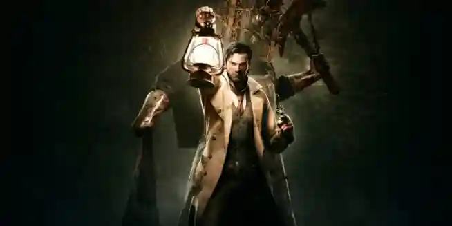
The Evil Within es una historia de horror psicológico que no solo trata sobre monstruos, sino sobre trauma, pérdida, manipulación mental y la manera en que la mente humana puede convertirse en su peor enemigo. Aunque a simple vista parece una pesadilla de supervivencia clásica, la saga construye algo mucho más complejo: un mundo donde la realidad puede romperse, deformarse y usarse como arma dentro de una estructura llamada STEM.
La cronología del primer juego no se entiende bien si se mira solo como una sucesión de misiones. En realidad, todo está conectado con el experimento de Mobius, con la existencia de Leslie, con la tragedia personal de Sebastian Castellanos y con las distintas capas de una simulación mental que convierte los miedos y recuerdos de las personas en escenarios vivos y hostiles.
Para entender la historia completa, hay que seguirla desde el principio: primero el incidente en Beacon Mental Hospital, luego la entrada de Sebastian al sistema, los eventos dentro de STEM, los DLC de Juli Kidman y, finalmente, la historia de The Executioner, que funciona como un cierre raro, simbólico y muy perturbador.
Antes del colapso – Mobius, STEM y el proyecto oculto
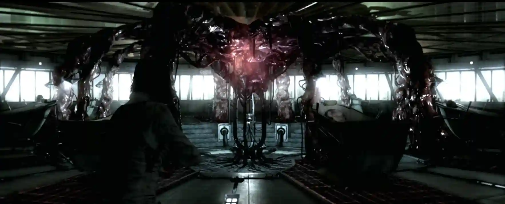
Mucho antes de que Sebastian entrara en la pesadilla, la organización secreta Mobius ya había desarrollado STEM, una tecnología capaz de conectar las mentes de varias personas dentro de una sola realidad compartida. En teoría, el sistema podía servir para compartir conocimiento, resolver problemas complejos o incluso construir una especie de conciencia colectiva controlada. En la práctica, se convirtió en una herramienta peligrosísima capaz de destruir completamente la identidad individual.
Dentro del proyecto había intereses muy distintos. Algunos querían usar STEM como solución tecnológica; otros querían control social; otros simplemente buscaban poder. Pero el gran problema era que la mente humana no responde bien cuando se la obliga a convivir con otras mentes en un espacio artificial donde los recuerdos, traumas y emociones terminan modelando el entorno.
Leslie Withers fue una de las piezas clave del proyecto. Su mente tenía una capacidad especial de adaptación dentro de STEM, lo que lo convirtió en un sujeto de enorme interés para Mobius. A partir de ahí, el sistema dejó de ser un experimento y pasó a ser un campo de batalla entre voluntades, manipulación y supervivencia mental.
Beacon Mental Hospital – El inicio del desastre
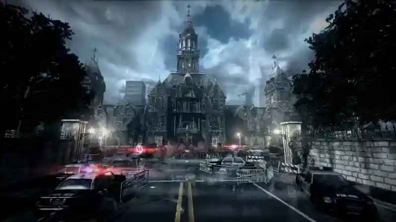
La historia principal arranca cuando Sebastian Castellanos, detective de la policía de Krimson City, recibe una llamada por una masacre ocurrida en Beacon Mental Hospital. Sebastian llega al lugar acompañado por Joseph Oda y Juli Kidman, sin saber que el hospital es solo la puerta de entrada a algo muchísimo peor.
Desde el momento en que entran al edificio, todo parece mal. Hay cadáveres, señales de violencia extraña y una atmósfera que no encaja con un crimen común. Poco después, Sebastian encuentra a un hombre desconocido llamado Ruvik, y la situación se descontrola por completo. Los tres policías quedan atrapados en un evento que rompe toda lógica: ya no están en un lugar físico normal, sino dentro de una estructura mental deformada por STEM.
Ese instante marca el comienzo de la verdadera pesadilla. El Beacon no era solo una escena del crimen; era una puerta hacia un entorno diseñado para atrapar, confundir y destruir.
Sebastian Castellanos – El hombre que entra en la pesadilla
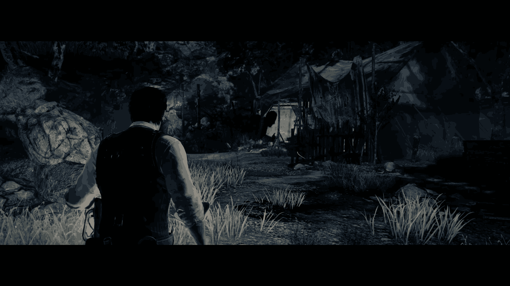
Sebastian Castellanos es el protagonista absoluto de la saga y uno de los personajes más trágicos del survival horror moderno. Al comienzo del juego es un detective duro, cansado y emocionalmente marcado por la vida. No es un héroe idealizado; es un hombre quebrado por dentro, aunque todavía no lo admita.
Su personalidad se entiende mucho mejor a medida que avanza la historia. Sebastian no solo lucha contra criaturas monstruosas, sino también contra la pérdida de control, la culpa y los ecos de su pasado. Lo que vuelve tan fuerte su arco es que la pesadilla externa coincide con una crisis interna cada vez más profunda.
La historia personal de Sebastian, su relación con su esposa Myra y el dolor por la desaparición de su hija Lily son elementos que más adelante van a convertirse en el núcleo emocional de toda la saga. En el primer juego todavía no lo comprendemos del todo, pero ya está claro que Sebastian lleva una carga enorme antes incluso de entrar en STEM.
Joseph Oda y Juli Kidman – Los otros dos detectives
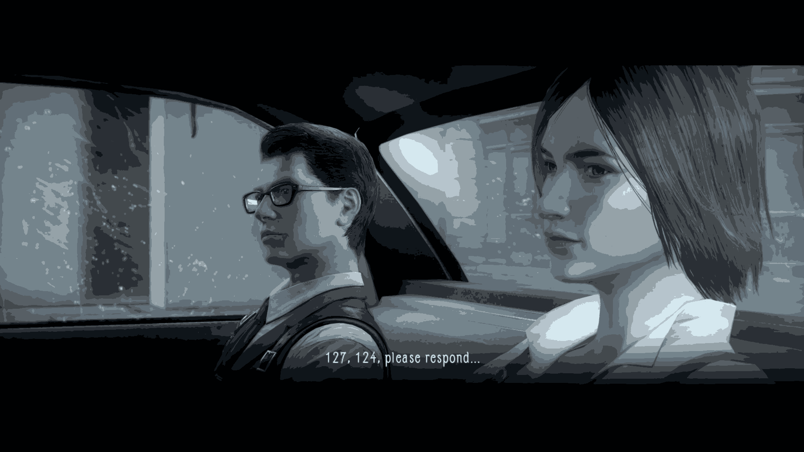
Joseph Oda es el compañero más sólido de Sebastian durante los primeros eventos del juego. Es un detective competente, reservado y con una fuerte lealtad hacia su equipo. Su papel dentro de la historia sirve para mostrar cómo el horror afecta incluso a alguien relativamente estable.
Juli Kidman, en cambio, es más compleja. A simple vista parece solo una detective más dentro del grupo, pero su comportamiento extraño y su relación con eventos ocultos dejan claro que no está allí por casualidad. Kidman observa, oculta información y parece seguir instrucciones que Sebastian todavía no puede comprender.
Los tres personajes funcionan como una especie de reflejo de distintas respuestas frente al mismo horror: Sebastian reacciona con determinación y trauma, Joseph con disciplina y resistencia, y Kidman con ambigüedad, secreto y distancia emocional.
Ruvik – El origen del miedo
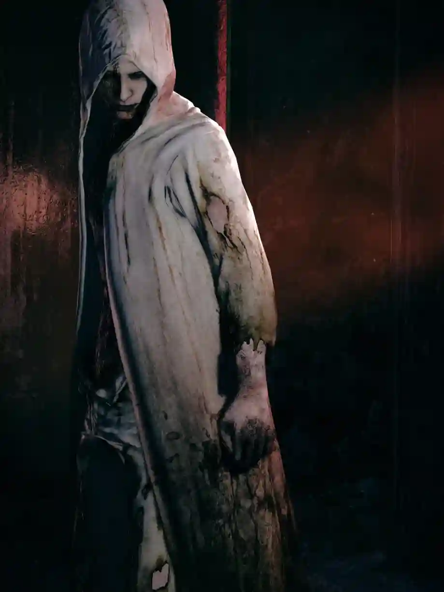
Ruvik es el gran antagonista del primer juego y probablemente uno de los villanos más importantes de toda la saga. Su historia es brutal desde el principio: fue una persona profundamente traumatizada por la violencia, la pérdida y el abuso, y terminó transformando todo ese dolor en una voluntad destructiva capaz de alterar la realidad misma dentro de STEM.
Cuando Sebastian lo encuentra por primera vez, Ruvik ya parece moverse entre las reglas del mundo como si lo conociera por completo. No actúa como un criminal común ni como un simple asesino. Su relación con STEM es tan profunda que termina convirtiéndose en el centro de la pesadilla.
El personaje representa la idea de que el trauma, si no se procesa, puede convertirse en una fuerza monstruosa. Ruvik no es solo un enemigo físico; es la manifestación de una herida psicológica que nunca se cerró.
Entrada a STEM – La realidad empieza a romperse
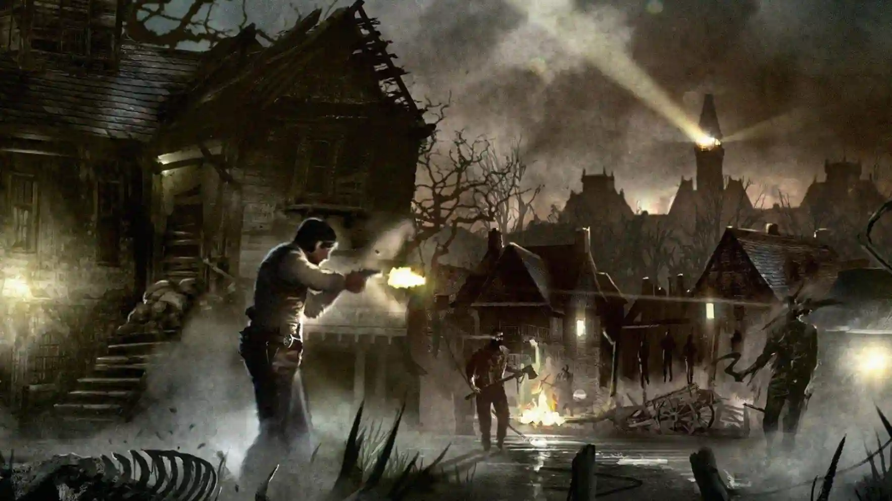
Una vez que Sebastian y los demás quedan atrapados en STEM, la lógica del mundo comienza a distorsionarse de manera salvaje. Los entornos cambian sin aviso, los espacios se deforman y los enemigos aparecen como proyecciones violentas nacidas de la mente colectiva.
Lo más perturbador de STEM es que no funciona como un simple sueño. Es una realidad construida a partir de múltiples conciencias, recuerdos y traumas superpuestos. Eso significa que cada zona puede tener una identidad distinta y cada criatura puede ser el resultado de un miedo personal, una obsesión o un experimento mental alterado.
Sebastian empieza a perder toda certeza sobre dónde está y qué está ocurriendo realmente. Esa sensación de desorientación es esencial para la historia, porque convierte la experiencia en algo mucho más que una aventura de acción: es una lucha por conservar la identidad.
Las criaturas de STEM – monstruos nacidos de la mente
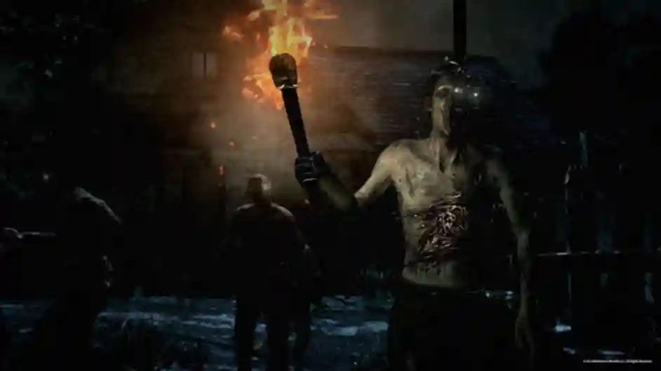
Los monstruos del juego no son simples bestias al azar. Muchos parecen haber nacido de recuerdos rotos, impulsos de violencia, imágenes deformadas del inconsciente o experimentos fallidos dentro de STEM.
Eso hace que cada enemigo se sienta más inquietante que en un survival horror tradicional. No solo son peligrosos porque atacan; también porque reflejan un mundo donde la mente dejó de ser un refugio y pasó a ser la fuente principal del horror.
La variedad de criaturas es enorme, pero todas comparten un elemento común: están profundamente ligadas a la degradación mental y al colapso de la realidad.
La búsqueda de salida y los primeros aliados
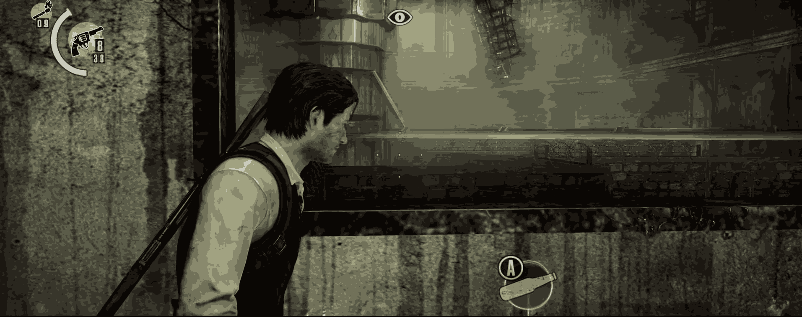
A lo largo del juego, Sebastian intenta encontrar una forma de salir de STEM mientras descubre que no está solo. Otros sobrevivientes aparecen de manera fragmentada, algunos con información útil y otros ya completamente perdidos en el sistema.
La historia se vuelve cada vez más confusa a medida que Sebastian avanza por hospitales deformados, ciudades imposibles, laboratorios abandonados y escenarios que parecen construidos por una mente rota. Cada zona refuerza el sentimiento de que alguien está manipulando el entorno con una intención clara: mantener a las víctimas atrapadas.
El objetivo de sobrevivir deja de ser simplemente escapar de monstruos. Ahora se trata de entender quién controla el sistema, por qué fue creado y qué papel juega Leslie dentro de todo esto.
Leslie Withers – la pieza más valiosa de STEM
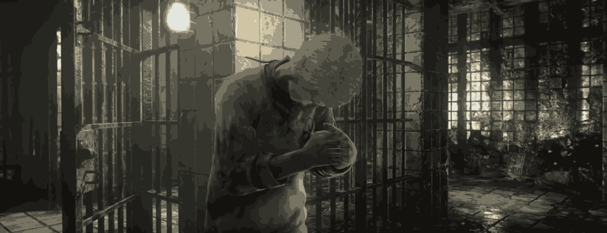
Leslie es uno de los personajes más importantes de la trama porque tiene una relación única con STEM. Su mente parece adaptarse al sistema de una manera distinta, lo que lo convierte en un objetivo de enorme valor para Mobius y en una figura central para Ruvik.
A lo largo de la historia, Leslie aparece como alguien frágil, confundido y constantemente arrastrado por eventos que no entiende. No tiene el rol de un héroe ni el de un villano; es más bien el punto de convergencia entre distintos intereses y poderes dentro de la simulación.
Su importancia narrativa está en que representa el tipo de persona que STEM puede absorber por completo si no se la protege o controla.
El laboratorio, los archivos y la verdad parcial
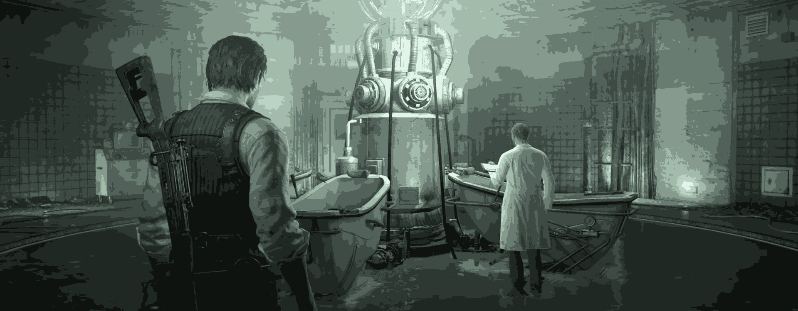
A medida que Sebastian avanza, descubre información fragmentada sobre Mobius, sobre el desarrollo de STEM y sobre los métodos que la organización utilizó para manipular tanto a pacientes como a investigadores.
El laboratorio y los registros internos muestran que el sistema no era un simple proyecto científico. Había un plan mucho más grande detrás: usar STEM para consolidar una forma de control absoluto sobre la percepción humana, los recuerdos y la realidad compartida.
Cada revelación hace que la historia gane profundidad. Ya no se trata solo de sobrevivir dentro de una pesadilla, sino de entender cómo esa pesadilla fue fabricada.
El final del juego base
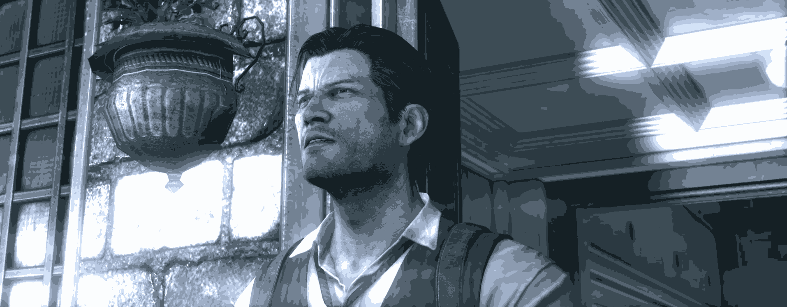
En la parte final, Sebastian logra acercarse a la verdad sobre Ruvik, STEM y la conexión entre ambos. La confrontación deja claro que el villano no es simplemente alguien escondido dentro de la simulación, sino alguien que ha moldeado ese mundo según sus traumas, su rabia y su obsesión con el control.
El enfrentamiento final no resuelve todo de forma limpia. Como ocurre con todo en The Evil Within, el cierre está cargado de ambigüedad, confusión y sensación de que la realidad sigue siendo inestable.
Sebastian logra salir de la pesadilla principal, pero la experiencia lo deja profundamente marcado. El juego no termina con una victoria total, sino con el inicio de una comprensión más amplia sobre la tragedia que realmente estaba ocurriendo.
The Assignment – la historia de Juli Kidman
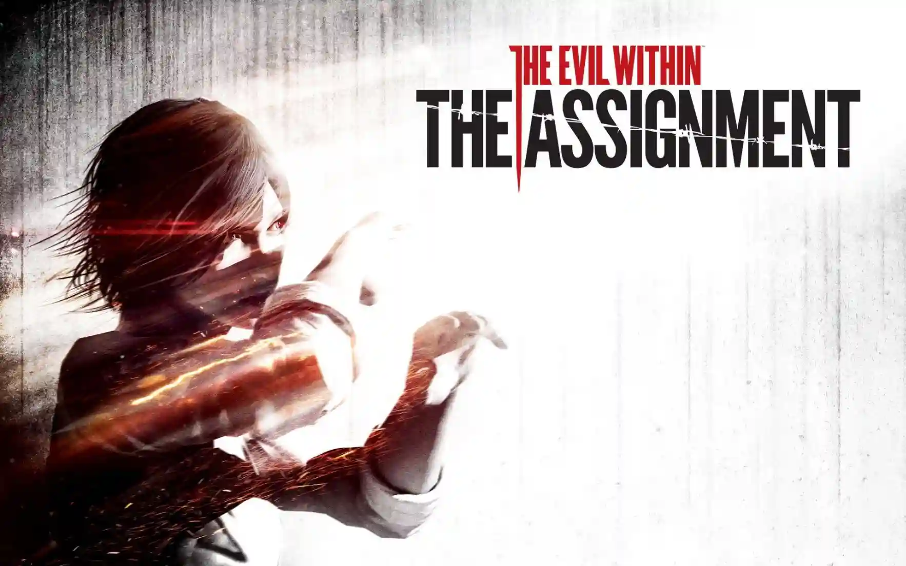
El primer DLC, The Assignment, cuenta la historia desde el punto de vista de Juli Kidman. Esto cambia completamente la perspectiva del jugador, porque de repente vemos que Kidman no era solo una detective más, sino una pieza clave de todo el esquema de Mobius.
Su recorrido por STEM muestra una capa mucho más silenciosa y clandestina del desastre. Kidman está allí para observar, recuperar información y seguir órdenes que no siempre comprende del todo. Su papel revela que sabía mucho más sobre lo que estaba pasando de lo que Sebastian sospechaba.
En este tramo aparece también una relación importante con Leslie. Kidman observa cómo el sistema lo trata casi como un recurso, una posible llave o un sujeto de valor especial. Eso la pone en una posición compleja: por un lado cumple con Mobius, pero por otro comienza a cuestionar sus verdaderas intenciones.
El DLC funciona muy bien porque no repite exactamente la historia principal. La ilumina desde otro ángulo, mostrando que la pesadilla de STEM tenía capas ocultas desde el comienzo.
The Consequence – Kidman contra Mobius
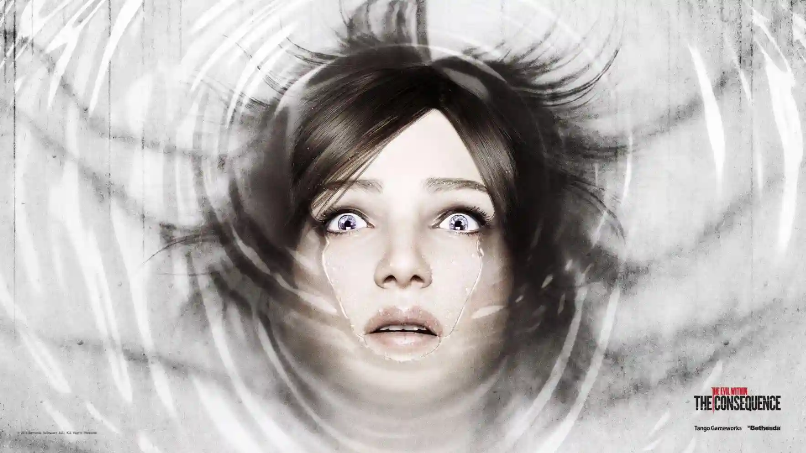
En The Consequence, la historia de Kidman continúa y se vuelve todavía más crítica. Su vínculo con Mobius empieza a romperse por completo y queda claro que la organización no solo manipula a las personas, sino que también está dispuesta a descartarlas en cuanto dejan de ser útiles.
Este DLC revela más detalles sobre las verdaderas intenciones de Mobius y sobre la manera en que Kidman fue utilizada como agente dentro de la simulación. La protagonista deja de ser una observadora pasiva y empieza a actuar con más decisión, intentando proteger a Leslie y escapar del control que la rodea.
El tono de esta expansión es más tenso y político. Ya no se trata solo de horror y monstruos; ahora también hay traición, espionaje corporativo y conflicto entre facciones internas que usan STEM como herramienta de poder.
La historia de Kidman y su culpa

Kidman es uno de los personajes más interesantes de la saga porque su historia mezcla deber, engaño y remordimiento. A lo largo de los DLCs se entiende que no actuaba por crueldad pura, sino porque estaba atrapada en una estructura que la obligaba a obedecer.
Su arco es importante porque muestra que dentro del sistema no todos son monstruos de la misma forma. Algunos son víctimas, otros cómplices y otros simplemente piezas utilizadas por una organización mucho más grande.
La relación de Kidman con Sebastian también adquiere más peso gracias a estos capítulos, ya que el jugador entiende mejor por qué ella actuó como lo hizo y qué estaba intentando proteger.
The Executioner – la visión del Keeper
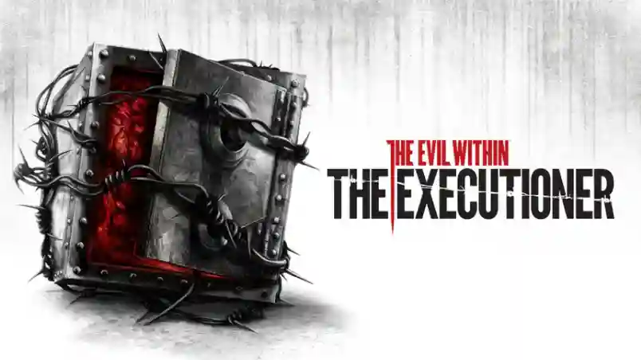
El último DLC, The Executioner, se enfoca en el Keeper, una de las figuras más inquietantes del primer juego. Aquí la historia toma una forma muy distinta, casi como una fábula torcida dentro de STEM, donde la violencia, la identidad y la memoria se mezclan de forma extraña.
El Keeper no es presentado como un simple monstruo. El DLC lo humaniza parcialmente y lo coloca en una especie de simulación emocional relacionada con su hija Lily. Eso le da al personaje una dimensión trágica inesperada, porque revela que detrás de su apariencia monstruosa hay una intención ligada al amor, al recuerdo y a la pérdida.
Este contenido funciona más como epílogo simbólico que como parte central de la acción, pero aporta mucho al tono general de la saga. The Evil Within nunca deja de girar alrededor del dolor transformado en horror, y The Executioner lo demuestra de forma muy clara.
Conclusión de The Evil Within
The Evil Within es una historia sobre cómo una mente rota puede deformar la realidad, cómo una organización puede intentar controlar la conciencia humana y cómo el trauma puede convertirse en un monstruo tan peligroso como cualquier criatura física.
La historia de Sebastian Castellanos, Kidman, Leslie y Ruvik construye una pesadilla muy particular donde el miedo no proviene solo de las criaturas, sino de la pérdida total de estabilidad mental.
Con sus DLCs, la saga amplía todavía más su mundo y deja claro que STΕM no es solo una tecnología peligrosa: es un espejo de los peores impulsos humanos.
Por eso The Evil Within se mantiene como una de las historias más intensas, retorcidas y memorables del survival horror moderno.
The Evil Within 2 – Historia cronológica completa
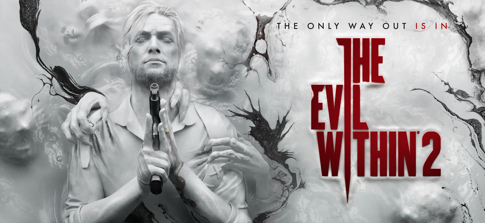
The Evil Within 2 continúa la historia de Sebastian Castellanos varios años después de los eventos del primer juego, pero esta vez el enfoque es todavía más emocional. Ya no estamos solamente dentro de una pesadilla creada por STEM: ahora la historia gira alrededor de la pérdida de Lily, la hija de Sebastian, y de cómo el protagonista debe volver a entrar en un mundo artificial para rescatarla antes de que desaparezca para siempre.
La secuela toma todo lo que construyó el primer juego y lo expande hacia una historia más personal, más triste y más humana. Sebastian ya no es solo un detective atrapado en una simulación; es un hombre roto por la culpa, el alcohol, la soledad y la destrucción de su familia. Su viaje dentro de Union no es únicamente una misión de rescate: es también una lucha contra sus propios recuerdos y contra el dolor que cargó durante años.
La cronología del juego mezcla el pasado de Sebastian con los sucesos presentes de STEM, la manipulación de Mobius, la creación de Union y las distintas amenazas que aparecen en la simulación. Todo conduce a un mismo punto: encontrar a Lily y descubrir qué ocurrió realmente con Myra, la familia de Sebastian y el sistema que volvió a atrapar a tanta gente dentro de una realidad falsa.
Después de Beacon – Sebastian roto por dentro
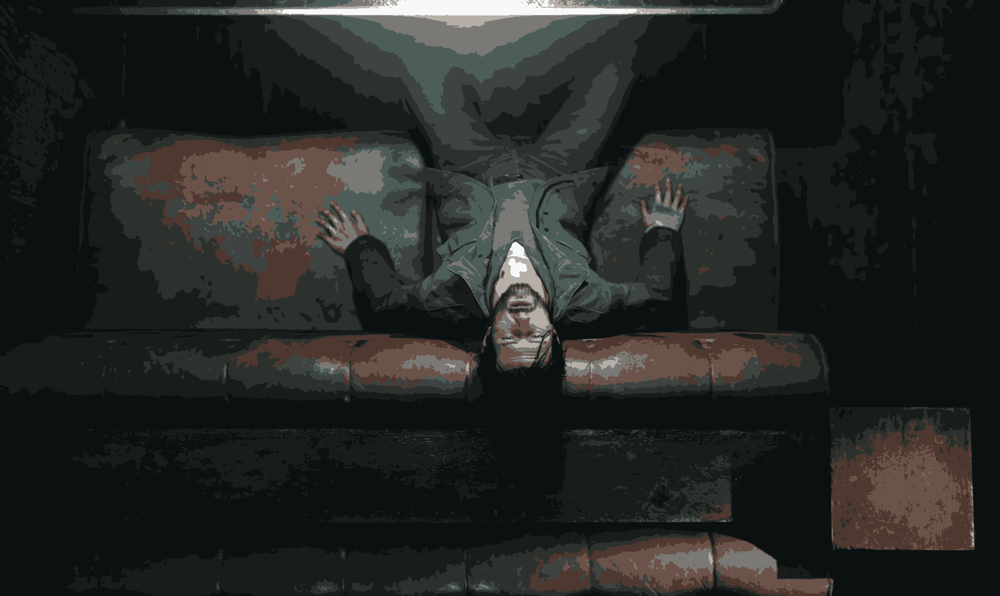
Después del desastre vivido en Beacon Mental Hospital, Sebastian ya no logra llevar una vida normal. Las experiencias del primer juego lo destruyeron por completo. Perdió estabilidad, perdió confianza en sí mismo y quedó emocionalmente separado del mundo. Su matrimonio con Myra se quebró, y la desaparición de Lily terminó de hundirlo en una etapa de dolor constante.
A diferencia de la primera entrega, donde Sebastian todavía tenía que entender la naturaleza del horror, en The Evil Within 2 el protagonista ya sabe exactamente lo devastador que puede ser STEM. Por eso su regreso al sistema no es heroico ni épico de forma tradicional. Es un acto desesperado de amor paternal y culpa acumulada.
El juego deja claro que Sebastian no se ha recuperado realmente. Vive con el peso de haber perdido a su hija y con la sensación de que su familia se destruyó por su incapacidad para protegerla. Esa herida emocional es la base de toda la historia.
Lily Castellanos – la razón para volver
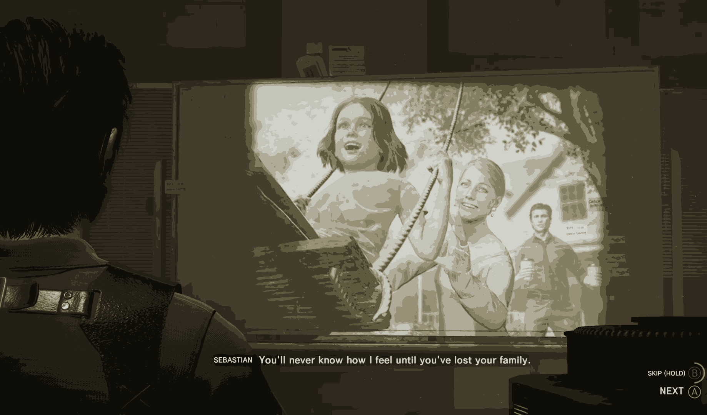
Lily Castellanos es el centro absoluto de la historia de The Evil Within 2. Antes de los eventos del juego, se cree que murió en un incendio, y esa pérdida marca de forma profunda a Sebastian y Myra. Sin embargo, más adelante se descubre que Lily en realidad fue utilizada como pieza clave para el funcionamiento de una nueva versión de STEM.
Su presencia dentro del sistema no es accidental. Lily posee un valor único porque representa la posibilidad de estabilizar o alterar la estructura de Union. Mobius y otras fuerzas vinculadas al sistema entienden que su mente puede convertirse en una herramienta extremadamente poderosa.
Para Sebastian, Lily no es un símbolo ni una pieza técnica. Es su hija. Eso hace que toda la historia adquiera una carga emocional muy fuerte. Cada paso dentro de Union, cada combate y cada revelación están guiados por la desesperación de encontrarla con vida.
Mobius y la creación de Union
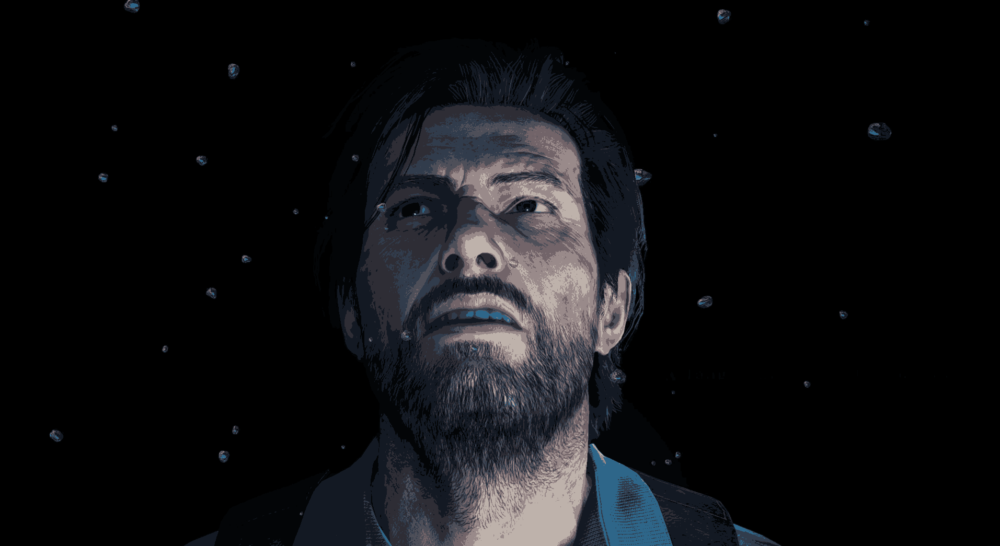
Después del fracaso del primer proyecto, Mobius continúa trabajando con STEM y decide crear una nueva estructura llamada Union. Esta nueva simulación pretende ser más estable y más controlable que el entorno caótico del Beacon.
Union se construye como una especie de ciudad perfecta, organizada y aparentemente pacífica. En apariencia, es un lugar moderno y funcional donde todo parece estar bajo control. Pero como suele pasar en la saga, esa tranquilidad es falsa. Debajo de la superficie existe manipulación, vigilancia y una lucha constante por el dominio de la simulación.
La diferencia más importante con el primer juego es que Union no parece un laboratorio aislado, sino una ciudad completa formada dentro de STEM. Eso permite que el horror tenga una escala mucho mayor. No estamos solo dentro de pasillos y salas extrañas; estamos dentro de una falsa civilización que puede deformarse por completo cuando la mente colectiva empieza a fallar.
La desaparición de Lily y la entrada de Sebastian a STEM
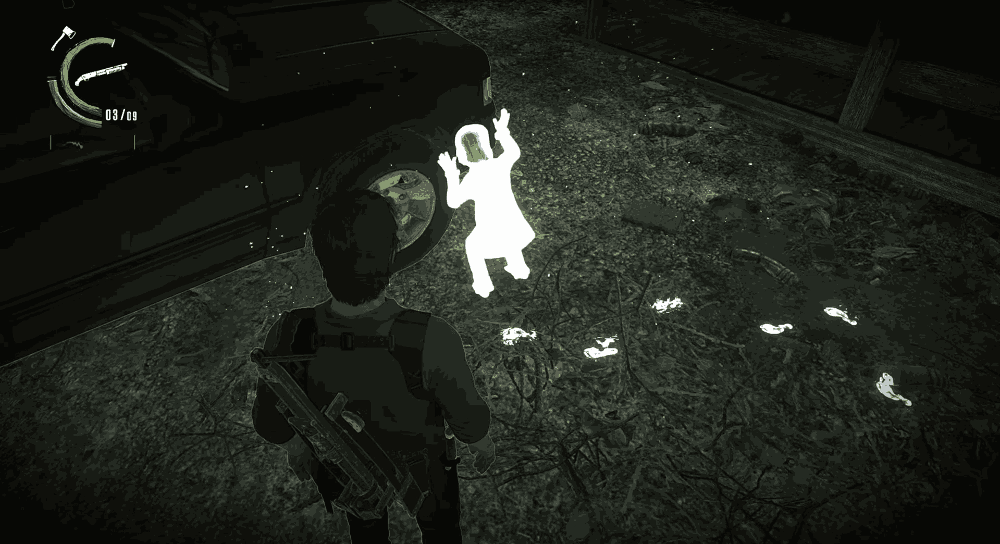
La historia comienza cuando Sebastian es contactado por la verdad sobre Lily: su hija no murió realmente, sino que está ligada a Union. Cuando recibe esta información, ya no tiene otra opción. Debe entrar de nuevo en STEM, aunque eso signifique volver a un infierno que casi lo destruyó una vez.
Este momento es muy importante porque define el tono completo del juego. Sebastian entra sabiendo que podría no salir con vida, pero aun así decide avanzar. Su motivación no es la gloria ni la supervivencia abstracta; es recuperar a su familia, o al menos lo que queda de ella.
Una vez dentro de Union, descubre que la ciudad ya está en crisis. Las calles se deforman, los habitantes se comportan de forma extraña y las estructuras del sistema empiezan a romperse. Algo ha contaminado la simulación desde adentro.
La guía de O'Neal
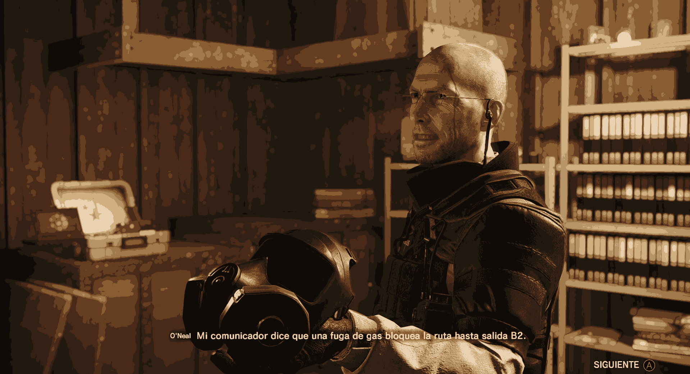
Uno de los primeros aliados que Sebastian encuentra dentro de Union es O'Neal. A diferencia de lo que podría parecer al inicio, no es un simple sobreviviente cualquiera. O'Neal conoce mejor que nadie el funcionamiento de la base, los sistemas internos y parte del desastre que está ocurriendo.
Su rol sirve como punto de apoyo para Sebastian al comienzo del juego. O'Neal le da instrucciones, le explica parte de la situación y lo ayuda a moverse por la ciudad deformada. Aunque no siempre actúa de forma totalmente confiable, su presencia es clave para que el protagonista entienda dónde está realmente.
O'Neal representa una de las caras más técnicas y pragmáticas del conflicto: gente atrapada dentro de STEM que intenta sobrevivir mientras todo se desmorona.
Juli Kidman – la conexión con Mobius
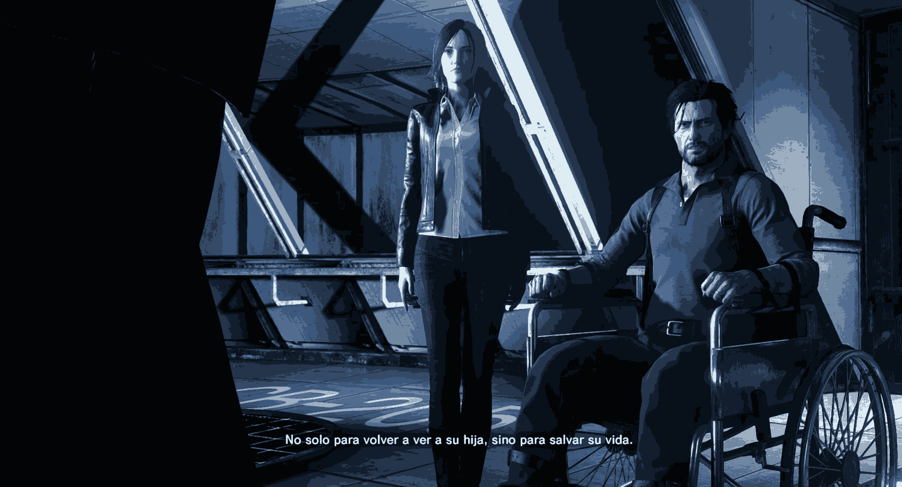
Juli Kidman regresa con un papel mucho más importante y visible que en el primer juego. Ahora sabemos que está mucho más conectada con Mobius de lo que parecía al principio, pero también que su relación con la organización es compleja y está llena de tensiones internas.
Kidman sigue siendo una figura ambigua. A veces ayuda a Sebastian, a veces parece seguir su propio plan, y en varios momentos da la impresión de saber mucho más sobre Union de lo que revela. Su historia continúa funcionando como una línea paralela de secretos, culpa y control.
En The Evil Within 2, Kidman cumple un rol esencial porque conecta la narrativa de Sebastian con los movimientos internos de Mobius. A medida que avanza el juego, queda claro que su posición no es la de una simple aliada o una simple enemiga, sino la de alguien atrapada entre órdenes superiores y decisiones personales.
La enfermedad de la simulación
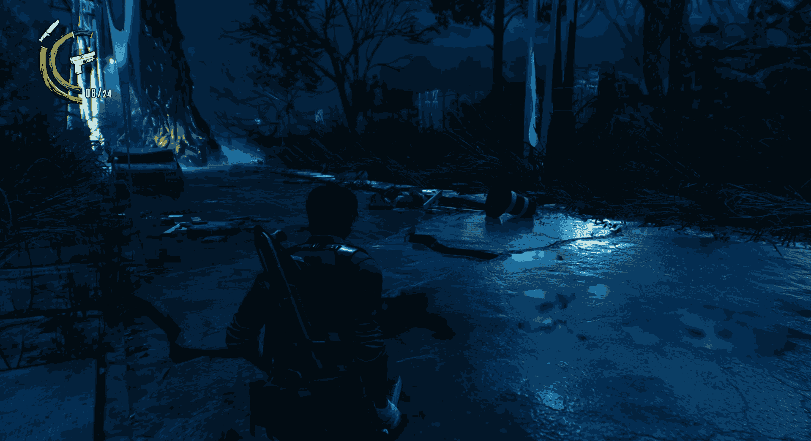
A medida que Sebastian se adentra más en Union, la ciudad empieza a mostrar señales de colapso. Los ciudadanos, que en apariencia llevaban vidas normales, comienzan a comportarse de forma violenta o extraña. Las calles se deforman, aparecen criaturas imposibles y distintos sectores de la ciudad revelan que la simulación está siendo afectada por una fuerza corruptora.
Eso es lo que hace que The Evil Within 2 funcione tan bien: el juego se siente como una ciudad viva que lentamente se va pudriendo. No parece una mazmorra aislada; parece una civilización completa que está fallando en tiempo real.
Sebastian tiene que avanzar por casas, plazas, laboratorios, edificios administrativos y zonas industriales que se transforman delante de sus ojos. Cada lugar muestra un tipo distinto de horror. En algunos casos el miedo nace de la arquitectura misma; en otros, de los monstruos o de la gente atrapada dentro del sistema.
La figura de Stefano Valentini
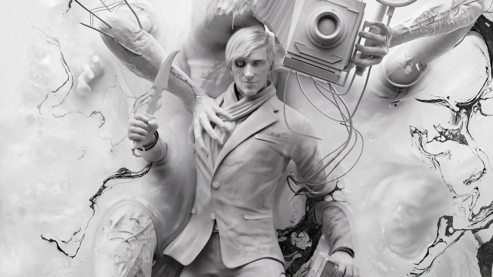
Stefano Valentini es uno de los antagonistas más memorables del juego. Artista, asesino y obsesivo del control estético, Stefano convierte la violencia en una forma de creación. Para él, el sufrimiento y la muerte no son solo actos criminales, sino materiales para construir su “obra”.
Su presencia en Union le da al juego una identidad muy particular. No se trata de un villano militar ni de un científico frío, sino de alguien que ve la destrucción como arte. Esa idea lo vuelve aún más perturbador, porque sus crímenes no responden solo a la brutalidad, sino también a una búsqueda enfermiza de perfección.
Sebastian termina cruzándose con Stefano como parte de la progresión de la simulación, y su historia introduce una capa más estilizada y personal del horror, diferente a la amenaza global de Mobius o a la locura de Ruvik.
Theodore Wallace – la falsa guía espiritual
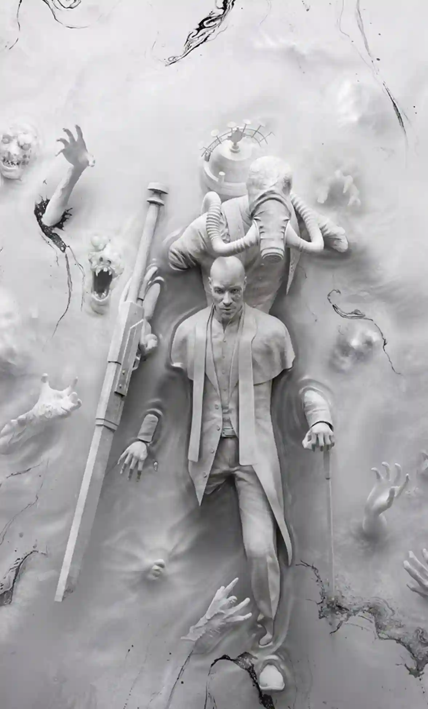
Theodore Wallace es otro personaje central dentro de la parte avanzada de la historia. Al principio parece alguien con autoridad moral o espiritual, pero rápidamente queda claro que también tiene una agenda propia y una visión muy retorcida del sistema.
Theodore representa la idea de manipulación ideológica dentro de STEM. No solamente controla información; también intenta orientar la percepción de los demás sobre lo que está ocurriendo. Su papel es clave porque muestra que el caos de Union no se debe solo a fallas técnicas, sino a luchas de poder entre personas que quieren dominar la simulación desde dentro.
Su presencia conecta la parte más psicológica del juego con la parte más religiosa y simbólica, algo que encaja muy bien con el tono de la saga.
Myra Castellanos – la verdad detrás del misterio
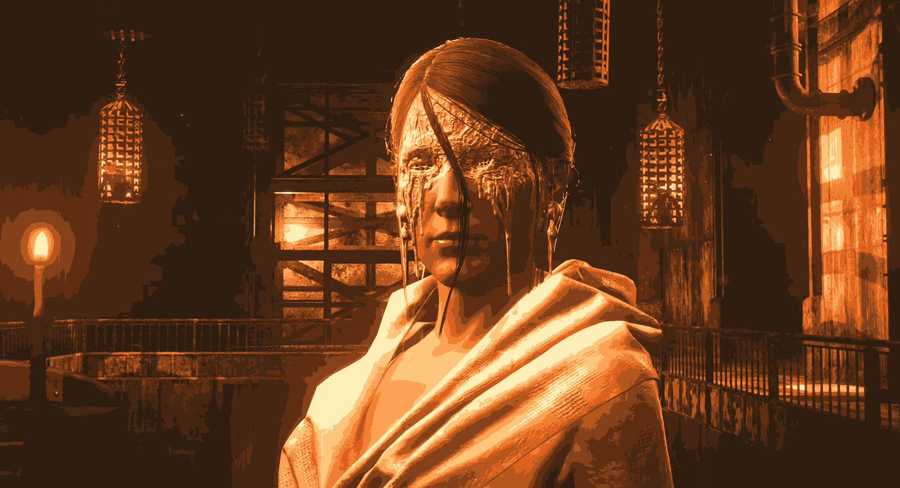
Myra, la esposa de Sebastian, parece al inicio una figura asociada únicamente con la tragedia familiar del pasado. Sin embargo, la historia revela que su papel es muchísimo más grande que eso.
Myra tiene una conexión profunda con STEM y con los eventos que llevaron a la desaparición de Lily. Su presencia dentro de la trama cambia por completo la lectura emocional del juego, porque ya no se trata solo de un padre buscando a su hija, sino de una familia destruida por decisiones, secretos y manipulación sistemática.
La relación entre Sebastian y Myra es compleja. Ambos sufrieron, ambos ocultaron cosas y ambos terminaron atrapados en una tragedia que rebasó sus fuerzas. El juego no los presenta como perfectos, sino como personas rotas que actuaron desde el dolor.
El viaje por Union
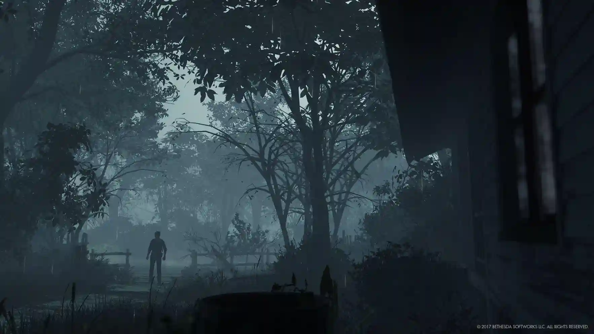
Una parte enorme de la historia consiste en recorrer Union mientras la ciudad se va desmoronando. Sebastian entra en zonas residenciales, oficinas, calles principales y espacios cada vez más retorcidos donde la simulación revela su inestabilidad.
Cada sector tiene una identidad distinta y parece construido para transmitir una emoción particular. Algunos lugares se sienten casi normales antes de romperse; otros ya nacen como espacios deformados por el trauma colectivo de los habitantes de STEM.
Esta estructura hace que la historia avance con una sensación constante de descubrimiento. Nunca estás simplemente pasando niveles: estás entendiendo poco a poco cómo funciona esa ciudad falsa y cómo cada personaje la está moldeando a su manera.
Los monstruos de The Evil Within 2
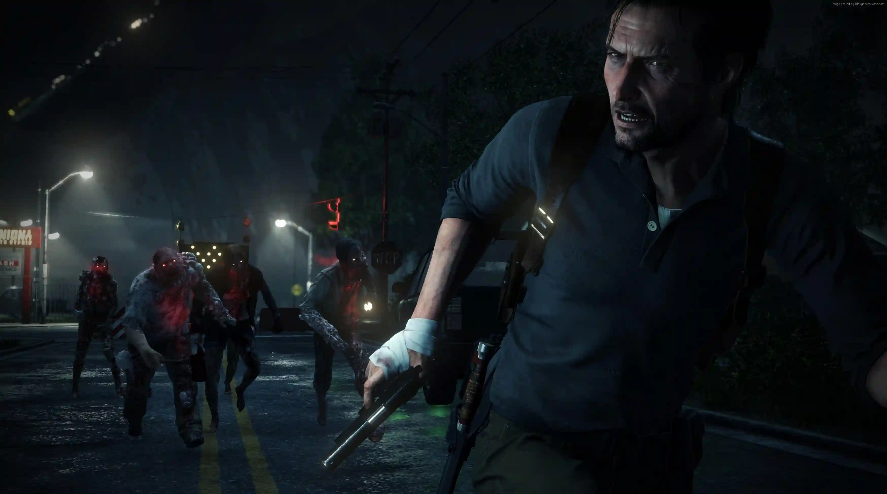
Al igual que en el primer juego, las criaturas de The Evil Within 2 no son monstruos aleatorios. Muchas parecen surgidas de emociones, traumas o visiones alteradas dentro de STEM. Cada enemigo se siente como un fragmento de una mente rota convertido en violencia física.
La secuela desarrolla aún más esa idea. Los enemigos no solo dan miedo por su diseño, sino por lo que implican: STEM está absorbiendo y reconfigurando las mentes humanas en algo grotesco y hostil.
Eso convierte a Union en un lugar donde nada puede considerarse estable. Ni los edificios, ni las personas, ni las criaturas que aparecen en el camino.
La verdad sobre STEM y el control de Mobius
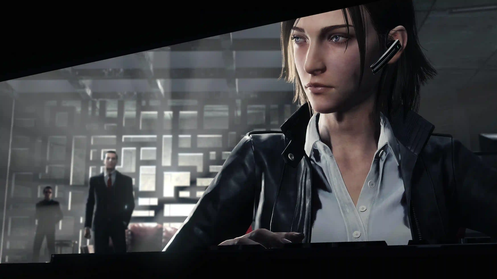
A medida que la historia avanza, Sebastian descubre que Mobius no solo creó Union como una simulación mejorada, sino como un intento de controlar por completo la interacción entre mentes humanas dentro del sistema.
La organización manipula información, oculta identidades y usa a las personas dentro de STEM como piezas de un experimento mucho mayor. El objetivo no es únicamente crear una realidad artificial, sino dominar el comportamiento humano a escala total.
Esto refuerza uno de los temas principales de toda la saga: la tecnología no es el verdadero problema por sí sola. El verdadero peligro surge cuando el poder de esa tecnología se coloca en manos de personas que quieren controlar a otros.
El enfrentamiento final
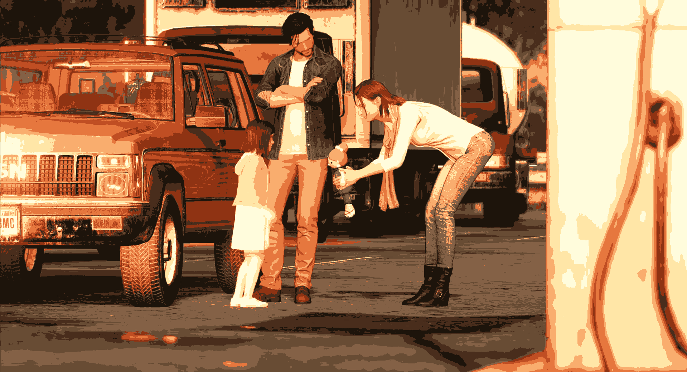
En la parte final, Sebastian llega al núcleo del conflicto y se enfrenta a las fuerzas que han estado manipulando Union desde dentro. La historia revela por completo el peso de Lily en el sistema y el verdadero costo emocional de todo lo que ocurrió desde el incendio inicial.
La confrontación final no es solo contra una amenaza física o contra un monstruo visible. Es una pelea por recuperar a la familia, por romper la manipulación de STEM y por escapar de una estructura que absorbió el dolor de Sebastian y lo convirtió en parte del propio sistema.
El juego cierra con un tono más esperanzador que el primero, aunque sin borrar el sufrimiento que lo atravesó todo. Sebastian consigue enfrentar la pesadilla de frente y, al menos por un momento, recuperar algo que parecía perdido para siempre.
Conclusión de The Evil Within 2
The Evil Within 2 lleva la saga a una escala más emocional y más profunda. Si el primer juego era una pesadilla de supervivencia y manipulación mental, la secuela agrega pérdida familiar, culpa, desesperación y una búsqueda personal que le da muchísimo peso al viaje de Sebastian.
La historia de Union, Lily, Myra, Mobius, Stefano y Theodore construye un universo donde la mente humana, la memoria y el trauma son tan peligrosos como cualquier criatura.
Con esta secuela, la saga termina de consolidarse como una de las más perturbadoras del terror psicológico moderno, mostrando que el peor enemigo no siempre es el monstruo que te persigue, sino la realidad deformada que nace dentro de tu propia cabeza.
Sebastian Castellanos
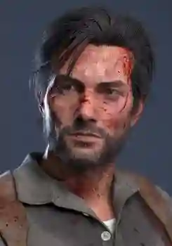
Sebastian Castellanos es el protagonista principal de toda la saga The Evil Within y uno de los personajes más importantes del survival horror moderno. Antes de los eventos del primer juego trabajaba como detective en Krimson City junto a Joseph Oda y Juli Kidman.
La vida de Sebastian ya estaba marcada por la tragedia antes incluso de entrar en STEM. La supuesta muerte de su hija Lily destruyó completamente a su familia y provocó el deterioro de su relación con Myra, su esposa. Ese dolor terminó transformándolo en un hombre cansado, aislado y emocionalmente roto.
Durante el primer juego, Sebastian queda atrapado dentro de la pesadilla creada por STEM y Ruvik. A lo largo de la historia demuestra una enorme capacidad de resistencia mental, incluso cuando la realidad alrededor suyo comienza a deformarse constantemente.
En The Evil Within 2, Sebastian cambia muchísimo. Ya no es solamente un detective intentando sobrevivir; ahora es un padre desesperado por recuperar a su hija. Su viaje por Union se convierte en una historia profundamente emocional sobre culpa, familia y redención.
A diferencia de muchos protagonistas del género, Sebastian nunca es presentado como invencible. Tiene miedo, duda constantemente y arrastra traumas enormes, pero aun así continúa avanzando incluso cuando todo parece perdido.
Juli Kidman
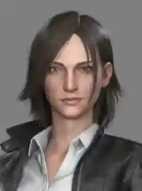
Juli Kidman es una detective y agente vinculada a Mobius. En el primer juego aparenta ser simplemente parte del equipo de Sebastian, pero poco a poco se revela que tiene una conexión mucho más profunda con la organización responsable de STEM.
Kidman es uno de los personajes más complejos de toda la saga. Trabaja para Mobius, recibe órdenes directas y oculta información constantemente, pero al mismo tiempo empieza a cuestionar los métodos de la organización y las consecuencias de sus experimentos.
Los DLCs The Assignment y The Consequence expanden muchísimo su historia. Allí vemos cómo Kidman queda atrapada entre su lealtad forzada hacia Mobius y su creciente culpa por todo lo ocurrido dentro de STEM.
Aunque muchas veces actúa de forma fría y distante, Kidman demuestra que todavía conserva humanidad. Su relación con Sebastian evoluciona lentamente y termina convirtiéndose en una de las pocas personas capaces de entender realmente el horror vivido dentro del sistema.
Kidman representa perfectamente uno de los temas principales de la saga: personas utilizadas por organizaciones enormes que terminan perdiendo parte de su identidad.
Joseph Oda
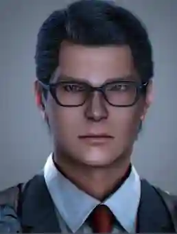
Joseph Oda es compañero de Sebastian y uno de los personajes más leales del primer juego. Inteligente, disciplinado y muy observador, Joseph mantiene la calma incluso cuando la realidad comienza a romperse dentro de STEM.
A diferencia de Sebastian, Joseph suele pensar de manera más racional y estratégica. Muchas veces funciona como la voz lógica del grupo, intentando comprender qué está ocurriendo mientras todos los demás empiezan a perder estabilidad emocional.
Su desaparición durante los eventos del primer juego deja muchas dudas y convirtió al personaje en uno de los más misteriosos de la franquicia. Muchos jugadores interpretaron que su historia quedó abierta intencionalmente.
Joseph representa la resistencia mental dentro del caos de STEM. Incluso enfrentando horrores imposibles, intenta conservar humanidad y control.
Myra Castellanos
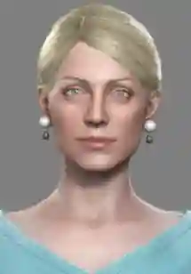
Myra Castellanos es la esposa de Sebastian y una de las figuras más importantes emocionalmente dentro de la saga. Durante años, Sebastian creyó que ella lo había abandonado tras la supuesta muerte de Lily, pero la verdad era mucho más compleja.
Myra investigó en secreto a Mobius y descubrió información extremadamente peligrosa relacionada con STEM. Eso la llevó a involucrarse profundamente con la organización, alejándose de Sebastian para intentar proteger a su familia.
En The Evil Within 2, Myra se convierte en un personaje central. Su conexión con Union y con Lily muestra hasta qué punto estaba dispuesta a sacrificarse para impedir que Mobius obtuviera control absoluto.
La historia de Myra es profundamente trágica porque vive atrapada entre el amor por su familia y el horror de descubrir lo que realmente estaba haciendo Mobius.
Lily Castellanos
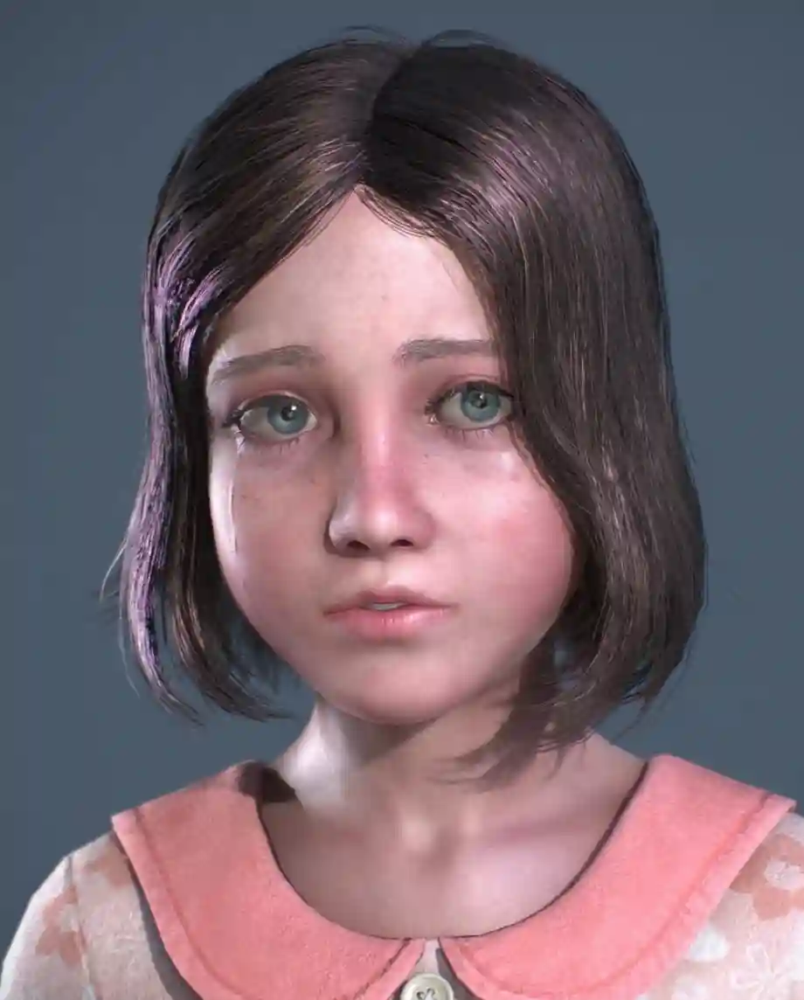
Lily es la hija de Sebastian y Myra. Aunque parece un personaje secundario al comienzo de la saga, termina convirtiéndose en el centro absoluto de The Evil Within 2.
Mobius utiliza a Lily como núcleo para estabilizar Union debido a sus características mentales especiales. Eso hace que toda la ciudad dependa parcialmente de ella.
Para Sebastian, Lily simboliza todo lo que perdió. La búsqueda de su hija impulsa cada una de sus decisiones durante el segundo juego.
A pesar de ser una niña, Lily representa esperanza dentro de una historia llena de dolor y manipulación mental.
Leslie Withers
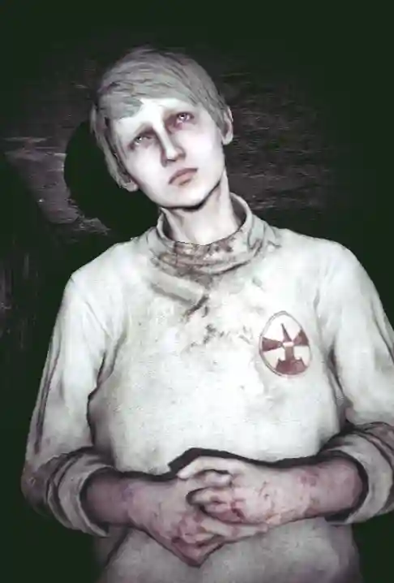
Leslie Withers es uno de los personajes más misteriosos del primer juego. Desde el comienzo queda claro que posee una mente especial capaz de interactuar con STEM de formas únicas.
Mobius y Ruvik lo consideran extremadamente importante debido a esa compatibilidad excepcional con el sistema. Eso lo convierte en una pieza clave dentro del conflicto principal.
Leslie suele mostrarse confundido y vulnerable, pero detrás de esa apariencia existe un enorme valor estratégico para todos los involucrados en el proyecto STEM.
El personaje simboliza cómo Mobius veía a las personas: no como seres humanos, sino como herramientas útiles para sus experimentos.
O'Neal
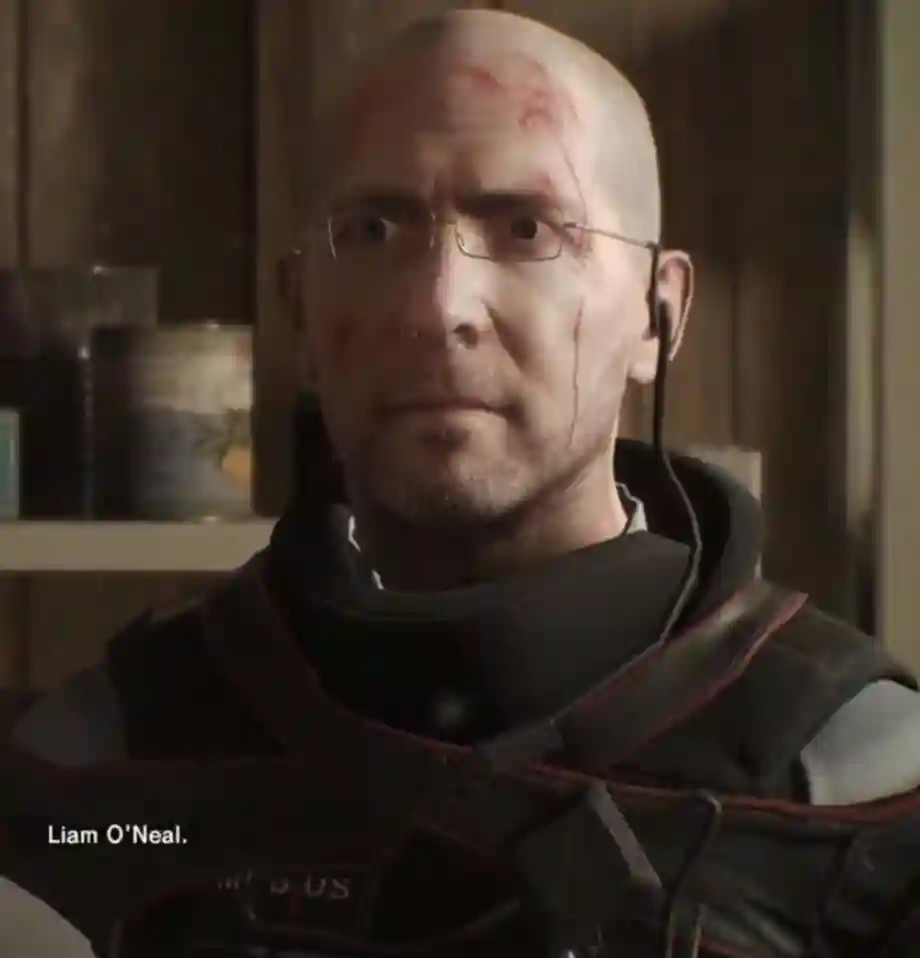
O'Neal es uno de los primeros aliados que Sebastian encuentra dentro de Union. Trabaja para Mobius y conoce gran parte del funcionamiento técnico de STEM.
Aunque al inicio parece simplemente un sobreviviente ayudando desde una base segura, poco a poco se descubre que también está siendo afectado psicológicamente por el colapso de la simulación.
El personaje refleja cómo incluso personas preparadas y entrenadas pueden terminar destruidas mentalmente dentro de STEM.
Torres
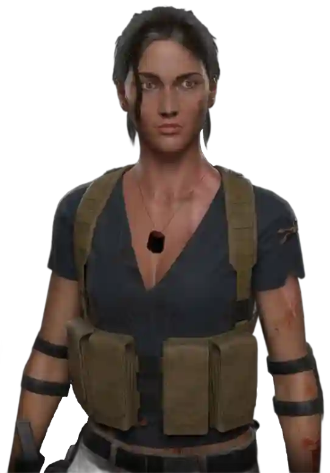
Torres es una operativa de Mobius atrapada dentro de Union. A diferencia de muchos otros agentes, demuestra empatía y voluntad de ayudar a Sebastian.
Su participación sirve para mostrar que no todas las personas dentro de Mobius apoyan completamente los métodos de la organización.
Torres intenta sobrevivir mientras ayuda a otros atrapados dentro de la simulación, convirtiéndose en uno de los pocos personajes genuinamente solidarios del segundo juego.
Hoffman
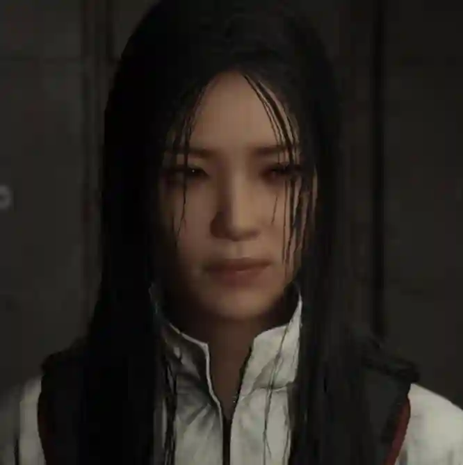
Hoffman es otra agente de Mobius que colabora con Sebastian durante los eventos de The Evil Within 2. Tiene conocimientos avanzados sobre STEM y sobre la situación de Union.
A diferencia de otros miembros de la organización, Hoffman termina cuestionando muchas decisiones internas de Mobius.
Su participación resulta clave para ayudar a Sebastian a acercarse al núcleo de la simulación y entender el verdadero alcance del proyecto.
Ruvik
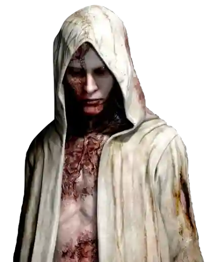
Ruvik, cuyo verdadero nombre es Ruben Victoriano, es el principal antagonista del primer juego y uno de los personajes más perturbadores de toda la saga.
Desde joven sufrió abusos, aislamiento y tragedias familiares que destruyeron su estabilidad mental. Su obsesión con el conocimiento y con el funcionamiento de la mente humana lo llevó a participar en investigaciones relacionadas con STEM.
Después de múltiples eventos traumáticos y experimentos brutales, Ruvik terminó convirtiéndose prácticamente en una entidad capaz de manipular la realidad dentro del sistema.
Todo el horror del primer juego gira alrededor suyo. Los escenarios deformados, las criaturas y las alteraciones mentales son reflejos de su dolor, su odio y su locura.
Ruvik representa perfectamente el concepto de trauma convertido en monstruo.
Stefano Valentini
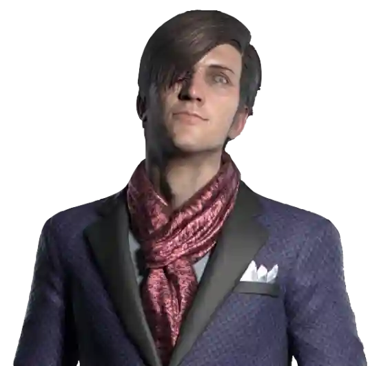
Stefano Valentini es uno de los principales antagonistas de The Evil Within 2. Fotógrafo y asesino obsesionado con el arte, considera que el sufrimiento humano puede convertirse en una forma de belleza.
Dentro de Union utiliza STEM para transformar asesinatos y escenas violentas en “obras artísticas”. Esa mezcla entre elegancia, locura y crueldad lo vuelve extremadamente perturbador.
Stefano disfruta controlar la simulación y manipular a las personas como si fueran parte de una exposición grotesca.
Su personalidad extravagante contrasta muchísimo con el tono oscuro del juego, convirtiéndolo en uno de los villanos más memorables de la saga.
Theodore Wallace
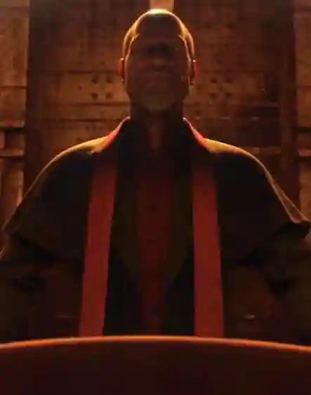
Theodore Wallace es otro de los grandes antagonistas de The Evil Within 2. Aparenta ser una figura espiritual y calmada, pero en realidad manipula emocionalmente a quienes lo rodean.
Theodore usa la fe, el miedo y la desesperación para controlar personas dentro de Union. Su objetivo es aprovechar el caos de STEM para obtener poder absoluto.
El personaje simboliza la manipulación ideológica y psicológica dentro de la simulación.
A diferencia de Stefano, Theodore no usa el horror como arte; lo usa como instrumento de control.
Mobius
Mobius es la principal organización antagonista de toda la saga. Aunque muchos personajes individuales funcionan como villanos, Mobius es la verdadera fuerza detrás de casi todos los eventos.
La organización creó STEM y realizó experimentos secretos relacionados con el control mental, la conciencia colectiva y la manipulación de la realidad.
Sus miembros consideran que la humanidad necesita ser controlada para alcanzar estabilidad, incluso si eso implica destruir identidades individuales y manipular recuerdos.
Mobius representa el peligro del poder tecnológico utilizado sin ética ni límites humanos.
The Keeper
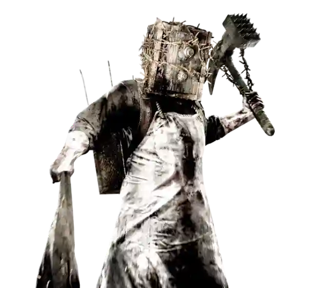
The Keeper, conocido por su enorme caja metálica como cabeza, es una de las criaturas más icónicas de la saga.
Aparece como una figura brutal e imparable dentro de STEM, simbolizando castigo, culpa y repetición constante del sufrimiento.
En el DLC The Executioner se revela una faceta más humana y trágica del personaje, mostrando que detrás del monstruo existe una historia ligada a la pérdida y la desesperación.
El diseño del Keeper se convirtió en uno de los símbolos más reconocibles de toda la franquicia.
Laura
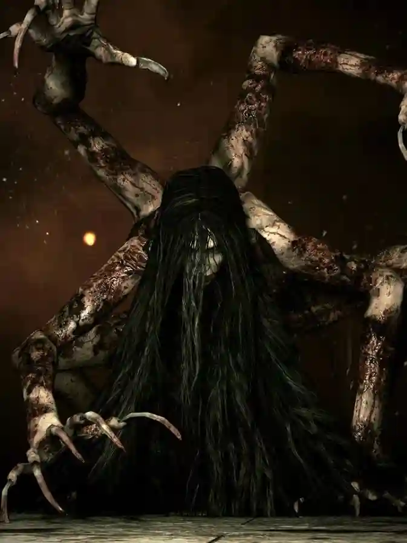
Laura es una de las criaturas más aterradoras del primer juego. Su apariencia grotesca y sus movimientos violentos la convierten en uno de los enemigos más memorables de la saga.
Está directamente relacionada con el pasado traumático de Ruvik y representa parte del horror emocional ligado a su familia.
Laura simboliza dolor, muerte y deformación física dentro de STEM.
Los Haunted
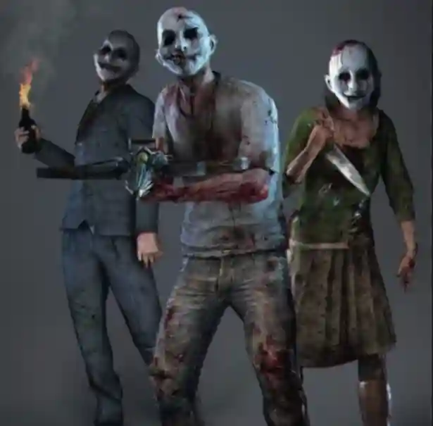
Los Haunted son los enemigos más comunes del primer juego. Son humanos deformados y corrompidos por STEM, convertidos en criaturas violentas y sin identidad.
Funcionan como equivalentes a zombis dentro del universo de The Evil Within, aunque tienen un comportamiento mucho más impredecible y perturbador.
Muchos conservan fragmentos de humanidad, lo que vuelve todavía más inquietante enfrentarlos.
Obscura
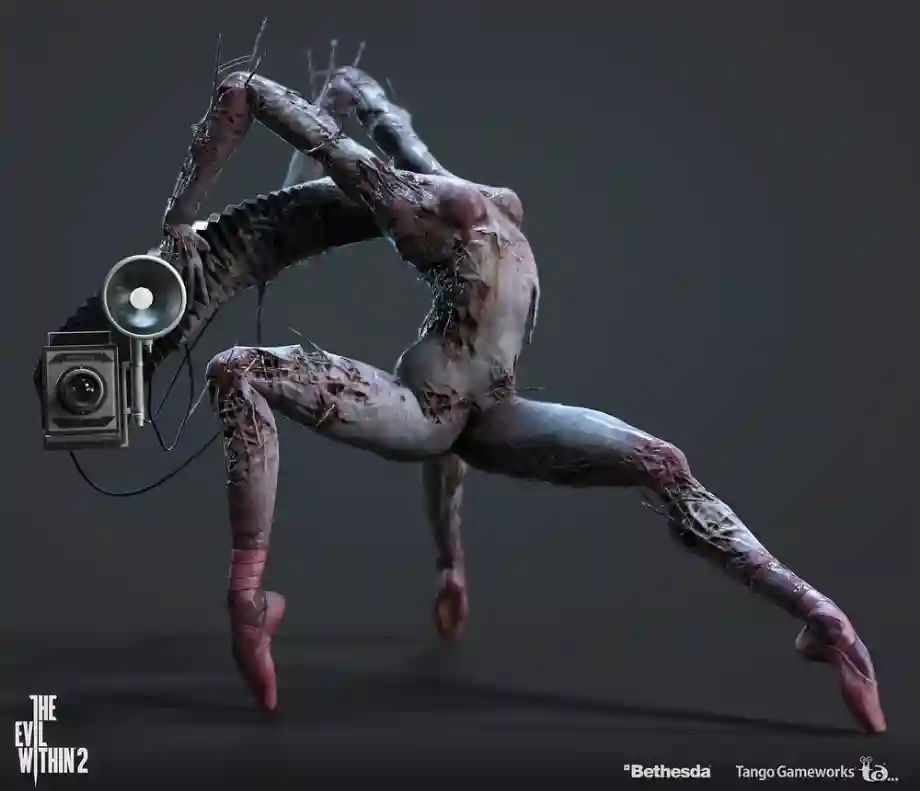
Obscura es una criatura creada por Stefano Valentini dentro de Union. Su diseño monstruoso está relacionado con cámaras, arte distorsionado y manipulación visual.
La criatura representa la obsesión enfermiza de Stefano por capturar momentos congelados en el tiempo.
Cada aparición de Obscura transmite una sensación extremadamente incómoda y surrealista.
Anima
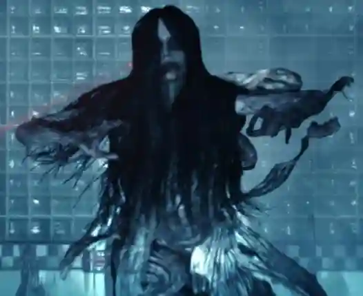
Anima es una de las entidades más misteriosas y aterradoras de toda la saga. Su presencia está ligada a errores, memorias corruptas y fragmentos rotos de STEM.
Aparece de manera inesperada, alterando completamente la realidad alrededor de Sebastian.
Muchos jugadores consideran que Anima representa el lado más puro del horror psicológico dentro de The Evil Within.
Conclusión de los personajes
Los personajes de The Evil Within son una de las razones principales por las que la saga logró destacarse dentro del terror moderno. Cada uno representa distintas formas de enfrentar el trauma, la culpa, la pérdida o el deseo de control.
Tanto los héroes como los villanos están profundamente conectados con STEM y con la idea de que la mente humana puede convertirse en un lugar mucho más aterrador que cualquier monstruo físico.
La combinación entre horror psicológico, tragedia personal y manipulación mental convierte a esta franquicia en una de las historias más oscuras y complejas del survival horror.